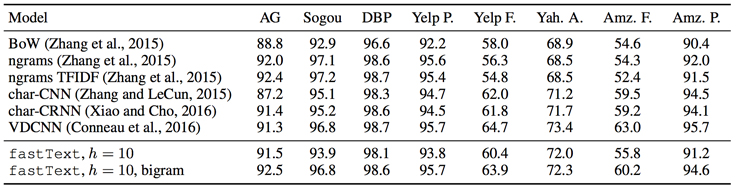
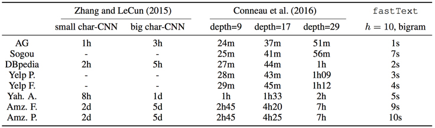

fastText on mobile

Today, the Facebook AI Research (FAIR) team released pre-trained vectors in 294 languages, accompanied by two quick-start tutorials, to increase fastText’s accessibility to the large community of students, software developers, and researchers interested in machine learning. fastText’s models now fit on smartphones and small computers like Raspberry Pi devices thanks to a new functionality that reduces memory usage.
First open-sourced last summer, fastText was designed to be accessible to anyone with generic hardware like notebooks and X86 cloud instances, or almost any platform with enough memory. Smartphone and small computer support extend fastText’s accessibility to an even larger community and a greater range of applications.
fastText on small memory devices
To reach more people and more applications via mobile phones and other internet-connected devices, this release contains a new functionality that reduces the memory consumed by fastText models. The typical model built on earlier versions use a few gigabytes of memory; this new feature helps to reduce memory to as little as a few hundred kilobytes.
Squeezing models into reduced memory footprints was made possible through collaboration with the FAIR team that recently released FAISS, an open source library for efficient similarity search and clustering of high-dimensional vectors. The FAIR fastText team published “FastText.zip: Compressing Text Classification Models,” which describes the combination of the two research projects that enabled the reduction to overcome the challenges to shipping models on small memory devices.
Simple yet state-of-the-art text classifier
fastText is designed to be simple to use for developers, domain experts, and students. Its speed allows you to iterate quickly and refine your models without specialized hardware. fastText models can be trained on more than a billion words on any multicore CPU in less than few minutes and can classify half a million sentences with hundreds of thousands of classes in less than a minute.
fastText classification compares favorably with more complex neural network architectures implemented for specialized GPU hardware. The performance comparisons were reported in another paper authored by the fastText team, “Bag of Tricks for Efficient Text Classification.” Little or no accuracy is lost with fastText compared with more complex neural network models. For example, fastText performed competitively on sentiment analysis problems when compared to the results of convolutional neural networks (Zhang et al. 2015).

How Facebook AI Research engineered fastText’s performance
Throughout the history of machine learning, research developments have often outpaced hardware performance, and researchers have worked to optimize for practical applications by maximizing accuracy while minimizing computational complexity. Facebook's research teams have developed unique expertise in fitting the best possible model to the hardware available. With fastText, however, one additional constraint is extending machine learning capabilities to everyone who has a multicore CPU computer with a C++ compiler — pretty much everyone developing software or in an engineering role.
Given this expertise, we were able to build a simple yet powerful library to solve important text classification problems tailored for generic, less powerful hardware. fastText is both impactful as a library for learning text classification and for adding accurate text classification features to applications. fastText also enables developers to add text classification features such as ranking comments with hashtags and ranking reviews based on sentiment analysis without a formal machine learning education.
Low dimensional vectors were used to improve performance. Large vectors improve accuracy because of the larger number of features in the word vector but are computationally expensive at training time. State of the art performance is possible with low dimensional vectors if the right features are present and the models can scale to a very large corpus. During encoding, vector size is reduced by presenting examples of low dimensional vectors obtained through conventional optimization methods.
Training time is reduced using a hierarchical softmax based on the Huffman coding tree (a binary tree variant). In operation, search times for the most likely class is also reduced, because each leaf of the tree representing a word vector has an associated probability. Leaves on lower branches have associated descending probabilities. Calculating the probability over the path rapidly narrows to the most likely path as lower probability branches are discarded.
fastText uses a bag-of-words model to extract features and a linear classifier to train the model. Because the bag-of-words model does not recognize sentence word order, the generalized contextual features of high-frequency words are not shared with low-frequency words, resulting in lower accuracy proportional to lower word frequency. Replacing the bag-of-words model with an n-gram model that recognizes word order would share features of high-frequency word vectors with lower frequency word vectors, but would add complexity, training time, and computational expense. Using fastText, partial n-gram information can be applied during training time as a training setting by selecting the number of words before and after the subject word in a sentence to balance training time and accuracy.
fastText can achieve better performance than the popular word2vec tool, or other state-of-the-art morphological word representations, and includes many more languages. fastText will receive future improvements from the FAIR team and fastText community making it more accessible.
Even though the accuracy is comparable, fastText is much faster. When compared with state-of-the-art neural network based models, fastText is 1,000 to 10,000 times faster. This is the result of the simplicity of its implementation that uses low-rank linear models and standard features like bigrams.
The table below is an indication of fastText’s performance.

Self-paced fastText tutorials
One of the tutorials accompanying this release explains supervised text classification. By stepping through the tutorial, the developer gains experience building a simple text classifier on a custom dataset. Then the tutorial explains how to tune the model to attain the best possible performance.
fastText is designed to be extremely fast. This guarantees the responsiveness that developers need to quickly iterate over different settings that affect accuracy. For example, n-grams improve the accuracy of applications like sentiment analysis where word order is important. Hierarchical softmax is shown to increase the speed of applications like hashtag predication where the output space is large.
In the second tutorial, fastText is used to learn word representations from Wikipedia pages. The tutorial steps through simple ways to test the quality of a model. Queries return a word’s nearest neighbors or given a related pair example, analogies produce the most closely related words to a a queried word. For example, a model can predict that Paris is related to France in the same way as Berlin to Germany. Even words that the model has not been trained on can be tested! fastText looks at groups of characters that build-up the word to produce its representation to find likely candidates for misspelled words and made-up words like ”shiftgear.”
Students and developers interested in machine learning can get right to work with the newly released self-paced tutorials available on our website. The tutorials are straightforward and do not require advanced knowledge in machine learning. The tutorials also offer insights into other features of the fastText library for more advanced developers.
Use cases include experimentation, prototyping, and production. fastText can be used as a command line, linked to a C++ application, or used as a library. Community contributed Python and Lua APIs are also available.